Implementing a new backend (algorithm) + frequentist approximations
Martin Modrák
2025-02-14
Source:vignettes/implementing_backends.Rmd
implementing_backends.RmdThis vignette will discuss how to implement a new type of backend for
the SBC package and thus allow you to integrate the SBC package with any
method/algorithm that can produce draws from a posterior distribution or
its approximation. As an example, we’ll wrap the base R glm
function as a backend. This will also let us discuss how we can treat
frequentist models as approximations to Bayesian models and that SBC can
tell us how faithful such an approximation is.
We assume familiarity with the SBC package architecture as discussed in the basic usage vignette and S3 classes in R.
Let’s setup the environment.
library(SBC)
library(ggplot2)
library(medicaldata)
library(formula.tools)
library(MASS)
# Setup caching of results
cache_dir <- "./_implementing_backends_SBC_cache"
if(!dir.exists(cache_dir)) {
dir.create(cache_dir)
}
future::plan(future::sequential)
theme_set(theme_minimal())Minimal backend support
If you remember from the, interface introduction vignette a backend for the SBC package describes a function that takes in data and produces posterior draws, i.e. the backend holds all the information other than data that are needed to run the given statistical method.
For practical reasons, the SBC package actually splits that function
into two steps: first, there is an S3 generic SBC_fit(),
that takes a backend object, observed data and the number of cores it is
allowed to use and produces an arbitrary object representing the fit.
Additionally, there is an SBC_fit_to_draws_matrix() S3
generic that takes in the resulting fit and returns posterior draws in
the posterior::draws_matrix format. The split here is
useful because it lets the SBC_results object to store the
raw fit objects, which can then be inspected by user for debugging
purposes. The SBC package makes no assumptions on the fit objects beyond
the fact that they define an SBC_fit_to_draws_matrix
method. To be precise, even this is not necessary, because if the object
implements a method for as_draws_matrix but not
SBC_fit_to_draws_matrix, the as_draws_matrix
implementation will be called.
So a simple implementation wrapping the glm function
will consist of three short functions. First is a “constructor” function
that creates new instance of the backend. Here, we’ll just capture all
the arguments (which we will later pass to glm), the
created object will be of a new S3 class
SBC_backend_glm:
SBC_backend_glm <- function(...) {
args = list(...)
if(any(names(args) == "data")) {
stop(paste0("Argument 'data' cannot be provided when defining a backend",
" as it needs to be set by the SBC package"))
}
structure(list(args = args), class = "SBC_backend_glm")
}So e.g. SBC_backend_glm(y ~ x, family = "poisson") would
create a valid backend representing a simple Poisson regression.
Now we create an implementation of SBC_fit for the newly
created class. We take the generated data (generated
argument) and pass it - along with all the arguments we stored in the
constructor - to glm via do.call. We ignore
the cores argument as we don’t have multicore support.
SBC_fit.SBC_backend_glm <- function(backend, generated, cores) {
args_with_data <- backend$args
args_with_data$data <- generated
do.call(glm, args_with_data)
}In some cases, it might be undesirable to work with the raw fit as
returned by the underlying package and wrap the result in some custom
class, but here we’ll have no trouble working with the glm
S3 class (as returned by the glm() function) directly.
The most conceptually difficult part is then the implementation of
SBC_fit_to_draws_matrix for the glm S3 class.
Here, we’ll remember how actually glm fits the model: it
finds the maximum likelihood estimate (MLE) and then uses the Hessian to
construct a multivariate normal approximation to the likelihood around
the MLE. In this way we can see glm as an approximate
Bayesian method where:
- A flat improper prior is used for all parameters
- The posterior is approximated by a multivariate normal distribution
And that’s exactly what we’ll do: the coef method for
glm fit returns the MLE and the vcov method
returns the variance-covariance matrix implied by the Hessian, so all we
need is to take a bunch of draws (here 1000) from this multivariate
normal. Therefore, the implementation is also very simple:
SBC_fit_to_draws_matrix.glm <- function(fit) {
samp_matrix <- MASS::mvrnorm(n = 1000, mu = coef(fit), Sigma = vcov(fit))
posterior::as_draws_matrix(samp_matrix)
}Note that for non-base packages, we specify the namespace explicitly
and do not rely on those functions being loaded via library
- this is good practice for package development and will make
paralellization work (see notes below).
A quick example to show this minimal setup already works. We’ll build a simple Poisson regression simulator:
generator_single_poisson <- function(N) {
log_intercept <- rnorm(1, mean = 4, sd = 1.5)
beta <- rnorm(1, mean = 0, sd = 1)
X <- rnorm(N, mean = 0, sd = 1)
mus <- log_intercept + beta * X
y <- rpois(N, exp(mus))
list(
variables = list(
# Naming the variables in the same way glm will name coefs
`(Intercept)` = log_intercept,
x = beta
),
generated = data.frame(y = y, x = X)
)
}
set.seed(354662)
datasets_poisson <- generate_datasets(SBC_generator_function(generator_single_poisson, N = 100),
n_sims = 100)Then we’ll construct a matching backend and compute the results.
backend_poisson <- SBC_backend_glm(y ~ x, family = "poisson")
res_poisson <- compute_SBC(datasets_poisson,
backend_poisson,
thin_ranks = 1,
cache_mode = "results",
cache_location = file.path(cache_dir,"poisson"))## Results loaded from cache file 'poisson'We have set thin_ranks = 1 as no thinning is needed (the
draws are i.i.d. by construction).
The rank and ecdf plots show no big problems
plot_rank_hist(res_poisson)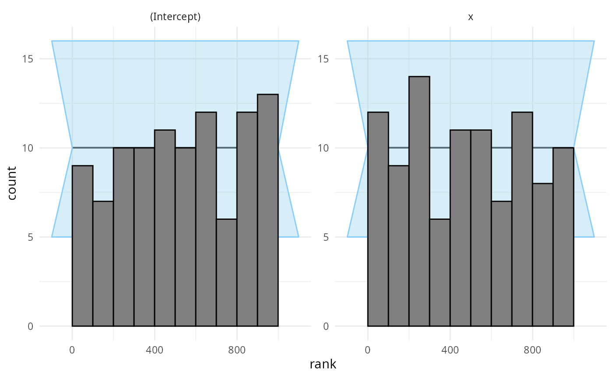
plot_ecdf_diff(res_poisson)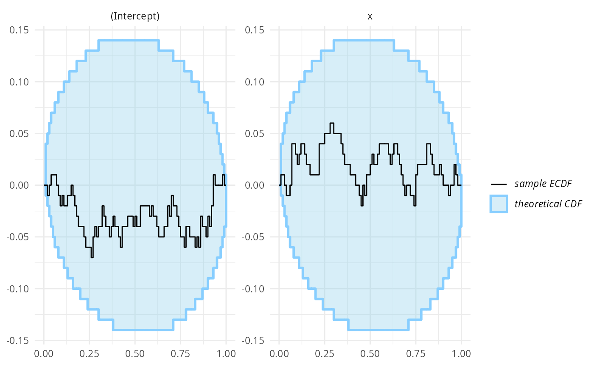
This is not unexpected - we’ve used a large number of observations and a simple model, so choice of prior should have negligible impact on the posterior and the normal approximation is very close to the exact Bayesian solution.
We can see that both variables are recovered almost exactly in almost all fits:
plot_sim_estimated(res_poisson)
Additional backend improvements
Beyond the minimal setup, there are additional functions that our
backend can implement to make it more comfortable to use. Let’s walk
through the options and se and how they can be implemented for the
glm wrapper.
Since (unlike MCMC methods) the glm approximation does
not produce autocorrelated draws, we can implement
SBC_backend_iid_draws to return TRUE. The SBC
package will then by default use thin_ranks = 1 argument to
compute_SBC and will not assess convergence/autocorrelation
via the R-hat and ESS diagnostics.
SBC_backend_iid_draws.SBC_backend_glm <- function(backend) {
TRUE
}Backends based on MCMC may want to implement
SBC_backend_default_thin_ranks() which specifies the
default thinning needed to remove autocorrelation from the fit.
Most statistical algorithms also give us some diagnostics that let us understand whether there was some problem in fitting.
To see some of the problems that glm can encounter,
we’ll run a quite pathological logistic regression:
problematic_data <- data.frame(y = rep(0:1, each = 100), x = 1:200)
glm(y ~ x, data = problematic_data, family = "binomial")## Warning: glm.fit: algorithm did not converge## Warning: glm.fit: fitted probabilities numerically 0 or 1 occurred##
## Call: glm(formula = y ~ x, family = "binomial", data = problematic_data)
##
## Coefficients:
## (Intercept) x
## -3006.52 29.92
##
## Degrees of Freedom: 199 Total (i.e. Null); 198 Residual
## Null Deviance: 277.3
## Residual Deviance: 1.276e-06 AIC: 4So we get two problems - one is that the optimization method did not
converge (this can be checked via the $converged member of
the resulting fit) and that extreme probabilities occurred (this is
related to the problem of “perfect separation”). This problem is however
only signalled as a warning and never reported in the fit object
itself.
For this reason, SBC package will capture all output, warnings and
messages that the backend produced and our implementation can then
inspect and process all of the output. This can be achieved by
implementing the SBC_fit_to_diagnostics() generic for our
fit object. This method should return a single row
data.frame that contains any diagnostics. Additionally, it
is often useful to add a custom class to the results to allow for
automatic summaries (we’ll get there). This is our implementation for
the glm class:
SBC_fit_to_diagnostics.glm <- function(fit, fit_output, fit_messages, fit_warnings) {
res <- data.frame(
probs_0_1 = any(grepl("fitted probabilities numerically 0 or 1 occurred", fit_warnings)),
converged = fit$converged
)
class(res) <- c("SBC_glm_diagnostics", class(res))
res
}Having a custom class let’s us implement a summary
implementation for our diagnostics:
summary.SBC_glm_diagnostics <- function(x) {
summ <- list(
n_fits = nrow(x),
n_probs_0_1 = sum(x$probs_0_1),
n_not_converged = sum(!x$converged)
)
structure(summ, class = "SBC_glm_diagnostics_summary")
}and we can then implement the get_diagnostic_messages()
generic, which takes an object and returns a list of messages
potentially signalling problems - any messages that signal problems are
then reported automatically to the user. The OK messages are also
reported when calling summary on an
SBC_results object.
We’ll use our summary implementation for
SBC_glm_diagnostics to create the messages:
get_diagnostic_messages.SBC_glm_diagnostics <- function(x) {
get_diagnostic_messages(summary(x))
}
get_diagnostic_messages.SBC_glm_diagnostics_summary <- function(x) {
message_list <- list()
if(x$n_probs_0_1 == 0) {
message_list[[1]] <-
data.frame(ok = TRUE, message = "No fit had 0/1 probabilities.")
} else {
message_list[[1]] <-
data.frame(ok = FALSE,
message = paste0(
x$n_probs_0_1, " (", round(100 * x$n_probs_0_1 / x$n_fits),
"%) of fits had 0/1 probabilities."))
}
if(x$n_not_converged == 0) {
message_list[[2]] <-
data.frame(ok = TRUE, message = "All fits converged.")
} else {
message_list[[2]] <-
data.frame(ok = FALSE,
message = paste0(
x$n_not_converged, " (", round(100 * x$n_not_converged / x$n_fits),
"%) of fits did not converge."))
}
SBC_diagnostic_messages(do.call(rbind, message_list))
}Finally, some backend objects are complex and may differ between R
sessions, even if they represent the same backend (Stan backends are a
prime example as the pointer/path to a compiled model can change). If
that’s the case, it may break the built-in caching functionality. Such
backends may want to implement the
SBC_backend_hash_for_cache() generic to provide a hash with
better properties.
And that’s about all that we can do for our backend. Before we’ll use the extended backend for some investigations, we’ll make an aside about parallel support.
Considerations for parallelization
SBC uses the future package to allow paralellization.
This means that when user sets up a parallel environment (e.g. via
plan(multisession)), the SBC_fit(),
SBC_fit_to_draws_matrix() and
SBC_backend_iid_draws() implementations will run in a fresh
session. To make this work smoothly, the functions should call non-base
R functions explicitly via namespace declaration (e.g. note that we call
MASS::mvrnorm, not just mvrnorm).
If you are implementing the backend to become part of the SBC
package, nothing more is needed for paralellization to work. If however
you are just building an ad-hoc backend that lives in your global
environment, you will also need to pass the three functions to the
globals argument of compute_SBC which will
make them available on all workers i.e. use:
compute_SBC(..., globals = c("SBC_fit.SBC_backend_glm",
"SBC_fit_to_draws_matrix.glm",
"SBC_backend_iid_draws.SBC_backend_glm"))If those functions in turn depend on other functions not defined in a
package, those functions would need to be added to globals
as well. In some future version of the package we hope to be able to
autodetect those dependencies.
Also note that if you are OK with single-core processing (which with
glm is very fast), you don’t need to care about any of
this.
glm as approximate Bayesian method
As we discussed earlier, we can view glm as an
approximation to a fully Bayesian method where the posterior is
approximate and priors are flat. We would therefore expect the
approximation to be well-behaved when we use wide priors for simulation
and/or have a lot of data to inform all the model coefficients. The
obvious way to verify whether the approximation is good is to run both
full Bayesian inference (e.g. via rstanarm) and
glm on the same data. The problem is that this reduces the
appeal of the approximation, as we need to wait for the fully Bayesian
fit anyway and so we might as well just use the Bayesian version.
However, SBC allows another way - we can check that the approximation is good by running only the approximate method (a lot of times) and look at SBC results. This may still be faster than running a single fully Bayesian fit. Additionally, fitting with an approximate algorithm can be useful to run approximate power calculations where it lets us cheaply fit a lot of simulations to e.g. understand how the width of our posterior intervals changes with sample size and at the same time we learn, whether the approximation is problematic in some way.
For the sake of example, let’s assume we’ve already gathered data that we want to analyze with Bayesian logistic regression. So our data generating process will use the observed covariate values but simulate new coefficients and outcome data. Below is a simple implementation with normal priors on the intercept and predictors. Note that we do some rejection sampling here to avoid using simulations where the generated response is the same or almost the same for all rows.
generator_single_logistic <- function(formula,
template_data,
intercept_prior_loc = 0,
intercept_prior_width = 2,
predictor_prior_loc = 0,
predictor_prior_width = 1) {
response_name <- formula.tools::lhs.vars(formula)
if(length(response_name) != 1) {
stop("The formula has to have just a single response")
}
X <- model.matrix(formula, template_data)
repeat {
coefs <- rnorm(ncol(X), predictor_prior_loc, sd = predictor_prior_width)
names(coefs) <- colnames(X)
if("(Intercept)" %in% names(coefs)) {
coefs["(Intercept)"] <- rnorm(1, intercept_prior_loc, sd = intercept_prior_width)
}
linpred <- X %*% coefs
probs <- plogis(linpred)
y <- rbinom(nrow(X), size = 1, prob = probs)
if(sum(y == 0) >= 5 && sum(y == 1) >= 5) {
break;
}
}
data_mod <- template_data
data_mod[[response_name]] <- y
list(
variables = as.list(coefs),
generated = data_mod
)
}We are going to use the indo_rct dataset from the
medicaldata package as a template. The dataset contains the
results of a randomized, placebo-controlled, prospective 2-arm trial of
indomethacin 100 mg PR once vs. placebo to prevent post-ERCP
Pancreatitis in 602 patients. You can inspect the codebook
as well as the published
paper online. The citation for the paper is:
Elmunzer, Higgins, et al., A Randomized Trial of Rectal Indomethacin to Prevent Post-ERCP Pancreatitis, New England Journal of Medicine, 2012, volume 366, pages 1414-1422, as found here.
Well-informed model
We’ll start by testing our approximate computation with the simplest
analysis - the primary binary outcome predicted only by the treatment
(the rx column in the data):
formula_indo_simple <- outcome ~ rx
set.seed(6524243)
datasets_indo_simple <- generate_datasets(SBC_generator_function(
generator_single_logistic,
formula = formula_indo_simple,
template_data = medicaldata::indo_rct),
n_sims = 500)
backend_indo_simple <- SBC_backend_glm(formula = formula_indo_simple, family = "binomial")
res_indo_simple <- compute_SBC(datasets_indo_simple, backend_indo_simple,
cache_mode = "results",
cache_location = file.path(cache_dir,"indo_simple"))## Results loaded from cache file 'indo_simple'The rank plots look good:
plot_rank_hist(res_indo_simple)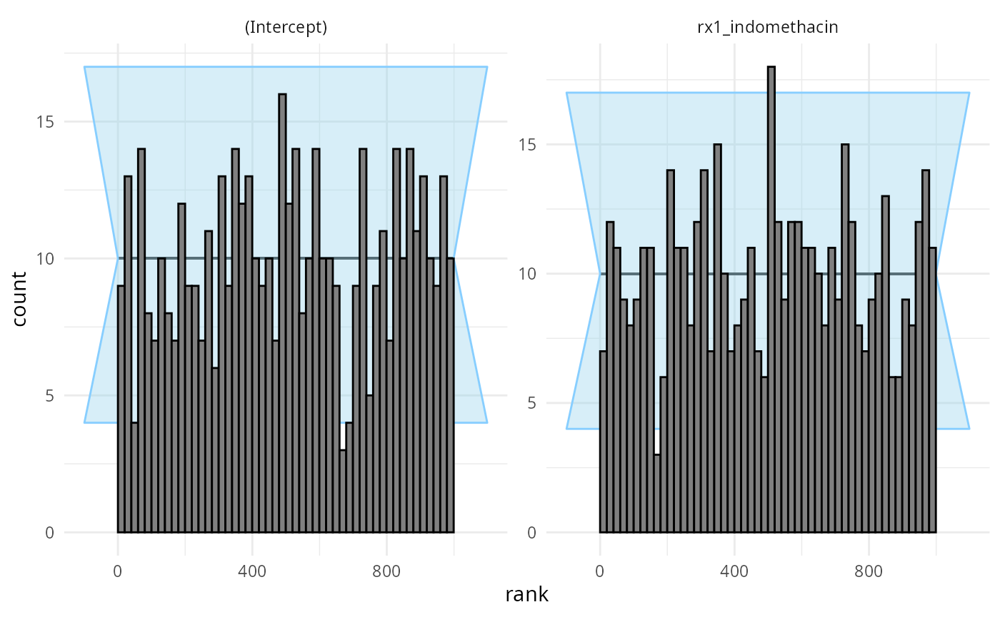
plot_ecdf_diff(res_indo_simple)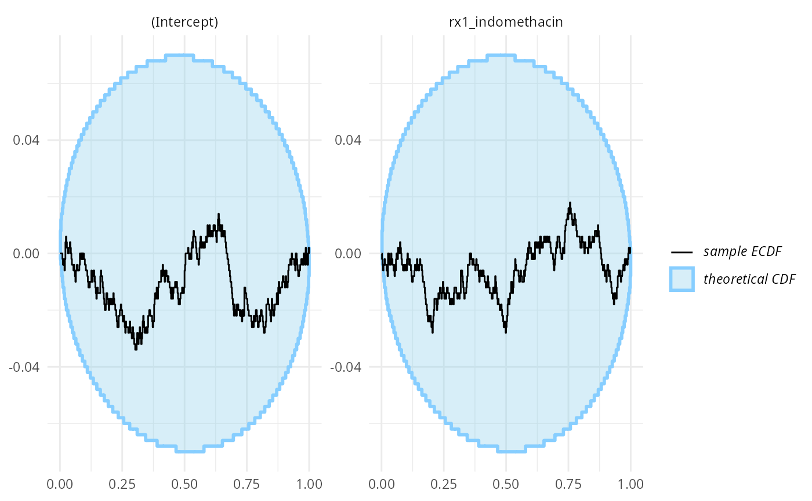
The coverages are very tight
plot_coverage(res_indo_simple)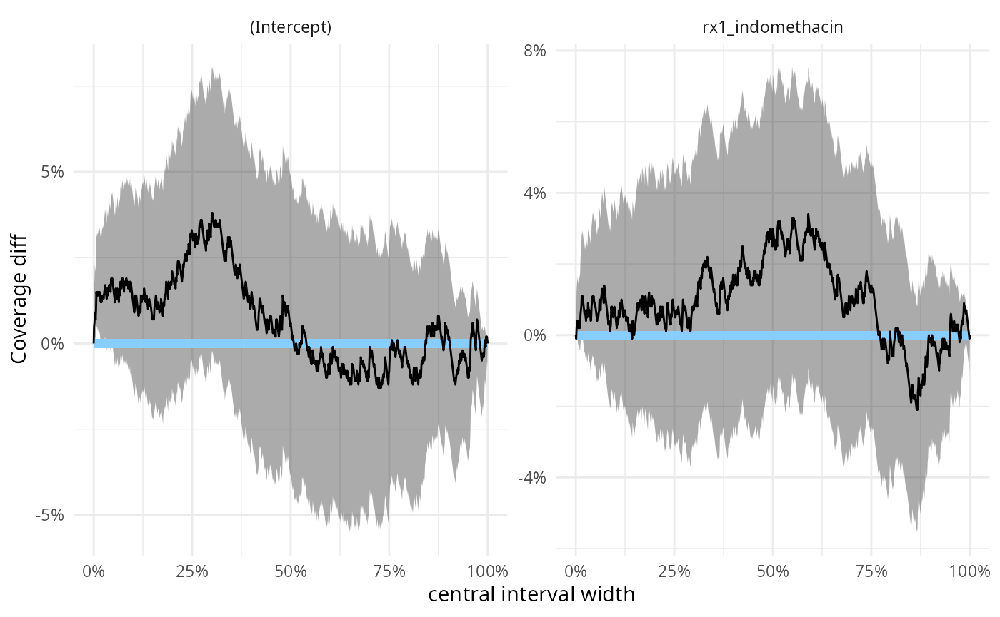
we can make this precise by inspecting the same results numerically:
stats_effect <- res_indo_simple$stats[res_indo_simple$stats$variable == "rx1_indomethacin",]
main_eff_coverage <- empirical_coverage(stats_effect, width = c(0.5,0.9, 0.95))
main_eff_coverage## # A tibble: 3 × 6
## variable width width_represented ci_low estimate ci_high
## <chr> <dbl> <dbl> <dbl> <dbl> <dbl>
## 1 rx1_indomethacin 0.5 0.5 0.486 0.53 0.573
## 2 rx1_indomethacin 0.9 0.9 0.868 0.898 0.922
## 3 rx1_indomethacin 0.95 0.95 0.930 0.952 0.967so we would expect e.g. the 95% CI for the main effect to correspond to roughly 93% - 97% credible interval of a fully Bayesian treatment - using more simulations would let us make this more precise, but for now we are happy that there clearly is no substantial discrepancy.
We may want to also look at how tight estimates we get - looking directly gives us a somewhat unhelpful plot:
plot_sim_estimated(res_indo_simple)
There is a simulation where the posterior uncertainty is very large. This corresponds to observed data where the outcome is the same for all rows where the treatment was used:
biggest_sd_sim <- res_indo_simple$stats$sim_id[
which.max(res_indo_simple$stats$sd)]
table(datasets_indo_simple$generated[[biggest_sd_sim]][c("outcome", "rx")])## rx
## outcome 0_placebo 1_indomethacin
## 0 26 0
## 1 281 295Filtering the extreme simulations out, we see that most commonly, we get a decently precise estimate.
stats_filtered <- res_indo_simple$stats[res_indo_simple$stats$sd < 200, ]
plot_sim_estimated(stats_filtered, alpha = 0.3)
Badly-informed model
But the simple approximation does not work everytime. Let’s say we want to increase the precision of our main effect estimate by adjusting for some factors that we believe are associated with the outcome: the study site, gender and age of the patients. Since one site has only 3 patients, we’ll remove it from the simulations. Additionally, we’ll standardize the age to be centered at 50 and divide by 10 to make the prior on the age coefficient have a sensible scale. To make matters worse, we further subsample the data to contain only 100 rows.
set.seed(21645222)
indo_rct_complex <- droplevels(
medicaldata::indo_rct[medicaldata::indo_rct$site != "4_Case",])
rows_to_keep <- sample(1:nrow(indo_rct_complex), size = 100)
indo_rct_complex <- indo_rct_complex[rows_to_keep,]
indo_rct_complex$age <- (indo_rct_complex$age - 50) / 10
indo_rct_complex$risk <- indo_rct_complex$risk - 3
indo_rct_complex$type <- factor(indo_rct_complex$type, ordered = TRUE)
formula_indo_complex <- outcome ~ rx + site + gender + age + risk
datasets_indo_complex <- generate_datasets(SBC_generator_function(
generator_single_logistic,
formula = formula_indo_complex,
template_data = indo_rct_complex),
n_sims = 500)
backend_indo_complex <- SBC_backend_glm(formula = formula_indo_complex, family = "binomial") Now we are ready to run SBC:
res_indo_complex <- compute_SBC(datasets_indo_complex, backend_indo_complex,
cache_mode = "results",
cache_location = file.path(cache_dir,"indo_complex"))## Results loaded from cache file 'indo_complex'## - 19 (4%) of fits had 0/1 probabilities.## - 2 (0%) of fits did not converge.## Not all diagnostics are OK.
## You can learn more by inspecting $default_diagnostics, $backend_diagnostics
## and/or investigating $outputs/$messages/$warnings for detailed output from the backend.We see the work we’ve done for diagnostics previously paid off as we are notified of some problems.
Additionally the rank plots shows some miscalibration, most
pronounced for the site3_UK coefficients:
plot_rank_hist(res_indo_complex)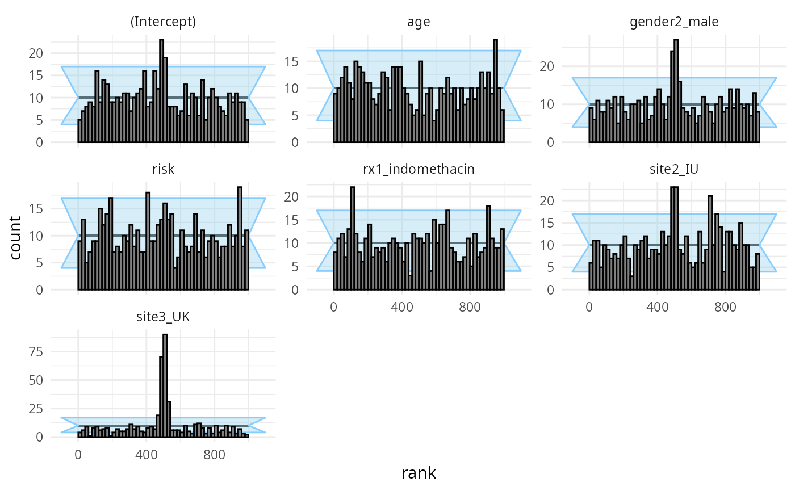
plot_ecdf_diff(res_indo_complex)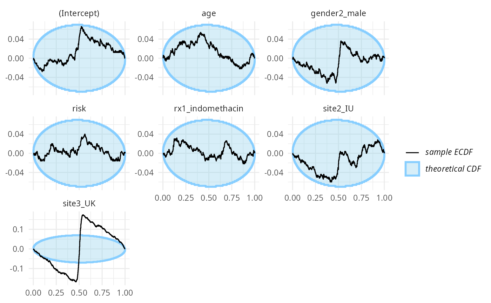
What happens is that many of the simulations result in extremely wide uncertainties around some of the coefficients, making the modest simulated values fall almost exactly in the middle - this then results in the overabundance of ranks around the midpoint. A fully Bayesian fit would regularize the uncertainties and avoid this problem.
The main effect of interest (rx1_indomethacin) is
however still reasonably well calibrated
stats_effect <- res_indo_complex$stats[res_indo_complex$stats$variable == "rx1_indomethacin",]
main_eff_coverage <- empirical_coverage(stats_effect, width = c(0.5,0.9, 0.95))
main_eff_coverage## # A tibble: 3 × 6
## variable width width_represented ci_low estimate ci_high
## <chr> <dbl> <dbl> <dbl> <dbl> <dbl>
## 1 rx1_indomethacin 0.5 0.5 0.437 0.48 0.524
## 2 rx1_indomethacin 0.9 0.9 0.868 0.898 0.922
## 3 rx1_indomethacin 0.95 0.95 0.930 0.952 0.967Badly-informed model, narrow priors
The above case aimed at making the normal approximation to the posterior problematic. We can obviously make things worse by also introducing a strong prior, concentrating away from zero which we’ll do here:
set.seed(1685554)
datasets_indo_complex_narrow <- generate_datasets(SBC_generator_function(
generator_single_logistic,
formula = formula_indo_complex,
template_data = indo_rct_complex,
intercept_prior_loc = 3,
intercept_prior_width = 0.5,
predictor_prior_loc = c(-2, 2),
predictor_prior_width = 0.5),
n_sims = 500)
res_indo_complex_narrow <- compute_SBC(datasets_indo_complex_narrow, backend_indo_complex,
cache_mode = "results",
cache_location = file.path(cache_dir,"indo_complex_narrow"))## Results loaded from cache file 'indo_complex_narrow'## - 169 (34%) of fits had 0/1 probabilities.## - 2 (0%) of fits did not converge.## Not all diagnostics are OK.
## You can learn more by inspecting $default_diagnostics, $backend_diagnostics
## and/or investigating $outputs/$messages/$warnings for detailed output from the backend.This is enough to make basically all the variables poorly calibrated:
plot_rank_hist(res_indo_complex_narrow)
plot_ecdf_diff(res_indo_complex_narrow)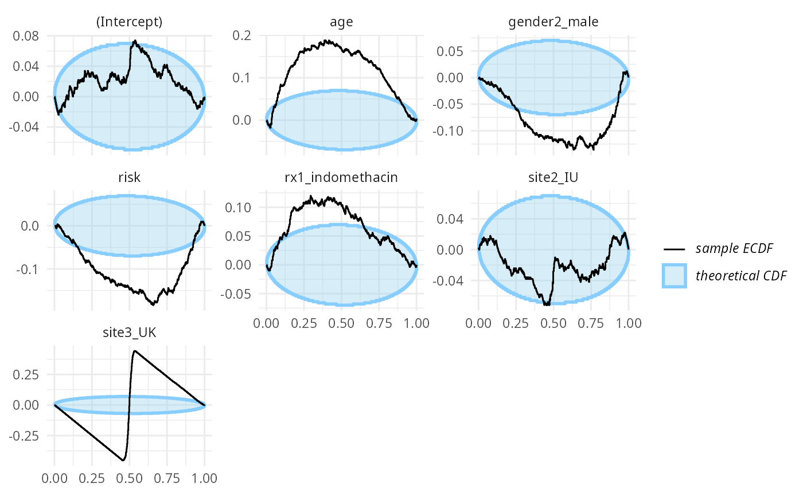
Well-informed model, narrow priors
To make the analysis complete, we’ll also return to the simple, well-informed model, but use narrow priors.
set.seed(3289542)
datasets_indo_simple_narrow <- generate_datasets(SBC_generator_function(
generator_single_logistic,
formula = formula_indo_simple,
template_data = medicaldata::indo_rct,
intercept_prior_loc = 3,
intercept_prior_width = 0.5,
predictor_prior_loc = c(-2, 2),
predictor_prior_width = 0.5),
n_sims = 500)
res_indo_simple_narrow <- compute_SBC(datasets_indo_simple_narrow, backend_indo_simple,
cache_mode = "results",
cache_location = file.path(cache_dir,"indo_simple_narrow"))## Results loaded from cache file 'indo_simple_narrow'Turns out that in this case, the likelihood is sometimes not enough to completely overwhelm the prior and the main treatment effect is poorly calibrated:
plot_rank_hist(res_indo_simple_narrow)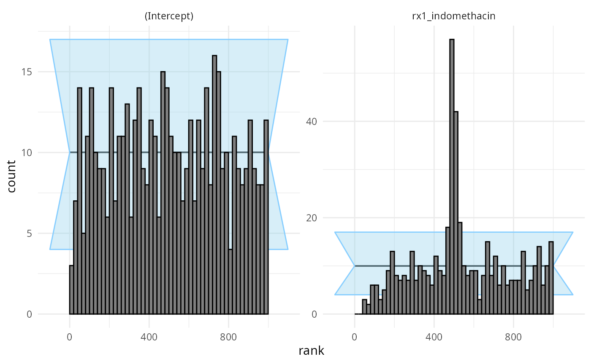
plot_ecdf_diff(res_indo_simple_narrow)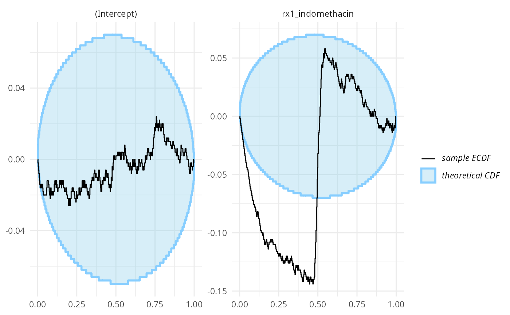
Conclusions
Implementing a minimal support for SBC using an additional algorithm requires writing three relatively simple functions. If you happen to wrap an algorithm, we’d be happy to accept a pull request with your backend at https://github.com/hyunjimoon/SBC/.
We’ve also shown that in some cases, glm can actually be
a pretty good approximation to a fully Bayesian treatment of an
equivalent model. Unfortunately, the approximation does not work always
so well - but SBC can tell us when it works and when it fails.